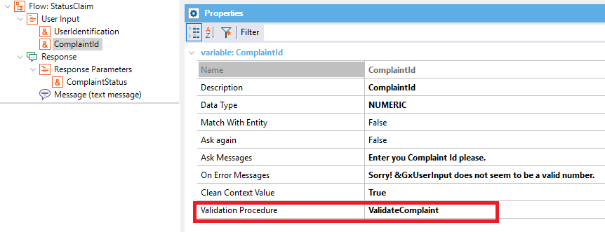

Procedure object used to validate the User Input. Scope Objects: Conversational Flows Instance Description
The Validation Procedure is available for any Chatbot User Input and is triggered as soon the user enters data for that user input. It is useful to validate the user's entry and ask him/her to enter another value if it's not valid (for the model). For instance, you can ask the user to enter the country where a promotion is going to be available. Although the user enters a valid country, it may not be the country where that promotion applies. There, the chatbot can ask the user to enter the information again (giving a hint of the valid countries for the promotion). The user input may have other validations (such as match With Entity property), or even the data type - which is always checked for the user input (e.g. if it's a date, the AI Provider sends an error if the user enters data which isn't in a valid date format).
The Validation Procedure must have a signature like the following: parm(in:&UserInput,out:&Error,out:&CustomResponse); where
Note: The parameter names can be anything, except the data types, which have to be the expected ones. Otherwise, you'll get an error like the following: error: Unexpected Data Type. The Data Type of the x parameter must be the same as the User Input Data Type NUMERIC. Temporary LimitationThe Try Limit property does not apply to the validation procedure yet. There isn't an automatic mechanism to count the failed attempts. You can have an internal counter for the maximum number of attempts, which can be implemented using the Context API. Samples
Consider the Citizen Service Chatbot sample where several complaints can be sent to citizen services in relation to sanitation, traffic, etc. In this sample, we have a Flow called "StatusClaim" where the user can enter his Identification and the Complaint Id (a number he was given when he made the complaint). Given that information, the chatbot answers the status of the complaint (it can be pending to be solved, or solved). So the following Flow is defined, where the ComplaintId user input has the Validation Procedure property set to "ValidateComplaint," which is a procedure of the KB.

The "ValidateComplaint" procedure is as follows: parm(in:&ComplaintId,out:&Error,out:&ResponseforFailure);
Chatbot.Context.GetUserContextValue(!"CitizenAdv",GetUserId(),!"UserIdentification",&ParameterValue)
for each Complaint
where ComplaintId = &ComplaintId
where UserIdentification.Trim().ToLower() = &ParameterValue.Trim().ToLower()
&Error = FALSE
exit
when none
&Error = TRUE
&ResponseforFailure = format(!"%1 isn't a valid complaint Id. Try again please.",&ComplaintId.ToString())
endfor
Note that we use the Chatbots Context API to get the UserIdentification (which is in the Chatbot Context) to be used as another parameter to find out if the complaint Id provided is valid (if it belongs to the user). AvailabilityThis property is available since GeneXus 16 upgrade 3. |